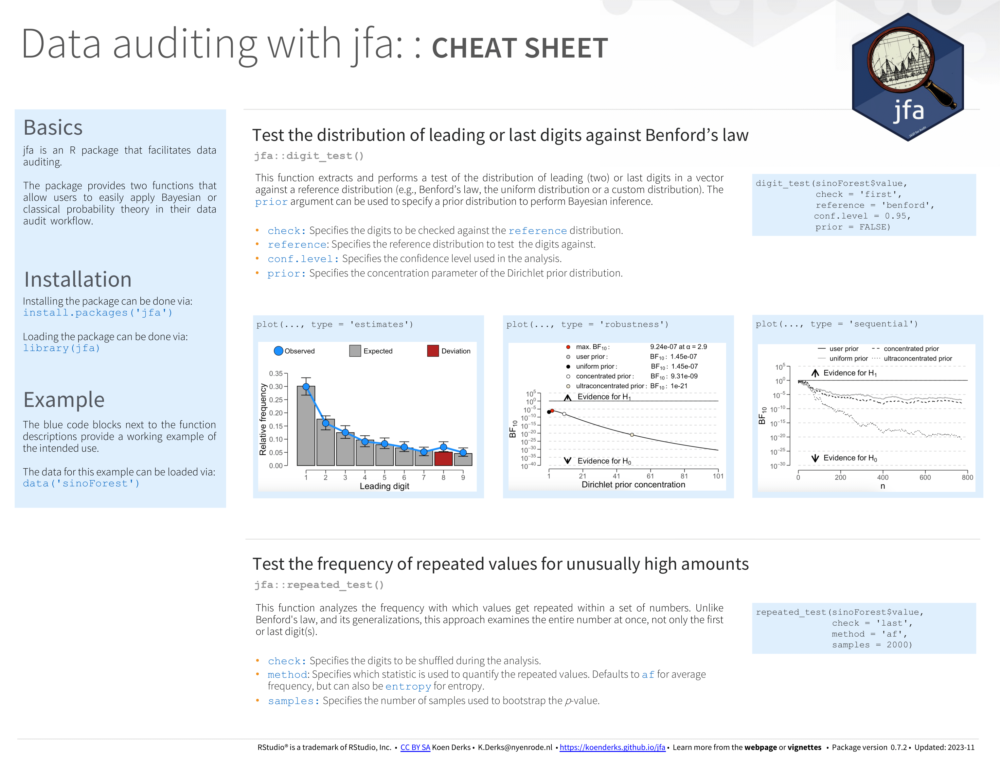

vignettes/articles/data-auditing.Rmd
data-auditing.RmdWelcome to the ‘Data auditing’ vignette of the jfa package. This page provides a straightforward guide to the functions in the package that are designed to facilitate data auditing. Specifically, these functions implement techniques to test the distribution of (leading or last) digits against a reference distribution (e.g., Benford’s law), and techniques to assess whether values are repeated more frequently than expected. The package enables users to specify a prior probability distribution to perform Bayesian data auditing with these functions.
Below you can find an explanation of the available data auditing functions in jfa.
The digit_test() function accepts a vector of numeric
values, extracts the requested digits, and compares the frequencies of
these digits to a reference distribution. By default, the function
performs a frequentist hypothesis test of the null hypothesis that the
digits are distributed according to the reference distribution, and
produces a p-value. When a prior is specified, the function
performs a Bayesian hypothesis test of the null hypothesis that the
digits are distributed according to the reference distribution against
the alternative hypothesis that the digits are not distributed according
to the reference distribution, and produces a Bayes factor (Kass & Raftery, 1995). The function returns
an object that can be used with the associated summary()
and plot() methods.
For additional details about this function, please refer to the function documentation on the package website.
Example usage:
# Compare first digits to Benford's law
digit_test(sinoForest[["value"]], check = "first", reference = "benford")##
## Classical Digit Distribution Test
##
## data: sinoForest[["value"]]
## n = 772, MAD = 0.0065981, X-squared = 7.6517, df = 8, p-value = 0.4682
## alternative hypothesis: leading digit(s) are not distributed according to the benford distribution.The repeated_test() function analyzes the frequency with
which values are repeated within a set of numbers. Unlike Benford’s law,
and its generalizations, this approach examines the entire number at
once, not only the first or last digit. For the technical details of
this procedure, see (Simonsohn, 2019). The
function returns an object that can be used with the associated
summary() and plot() methods.
For additional details about this function, please refer to the function documentation on the package website.
Example usage:
# Inspect last two digits for repeated values
repeated_test(sanitizer[["value"]], check = "lasttwo", samples = 5000)##
## Classical Repeated Values Test
##
## data: sanitizer[["value"]]
## n = 1600, AF = 1.5225, p-value = 0.0022
## alternative hypothesis: average frequency in data is greater than for random data.To ensure the accuracy of statistical results, jfa employs automated unit tests that regularly validate the output from the package against the following established benchmarks in the area of data auditing:
The cheat sheet below will help you get started with jfa’s data audit functionality. A pdf version can be downloaded here.
